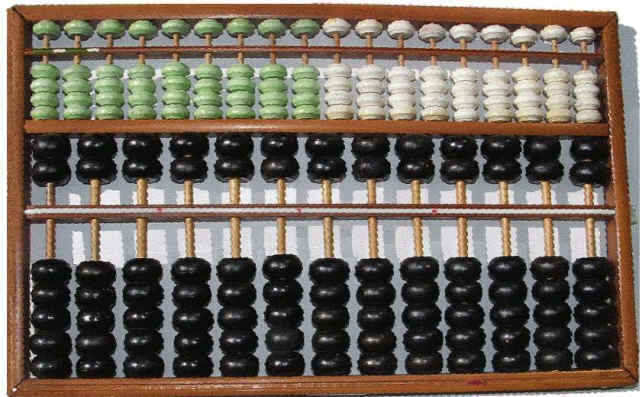

Addition, Subtraction
For a long time, the abacus, invented around 2000 B.C., was the closest thing to a calculator. It was made of several columns of beads, each representing a ones, tens, hundreds, thousands, etc. place. Beads on each column could be moved to count, moving one to the next column when the current one was full and resetting all previous columns.
